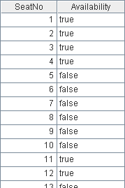
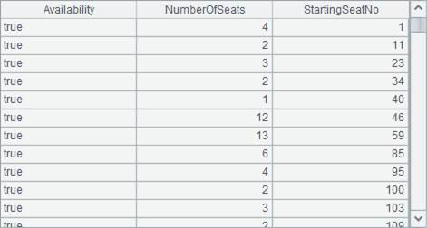

l Problem
In a restaurant capable of holding 1,000 people, the seats are numbered in order and recorded in a database table. For any customer being already seated, the corresponding seat will be marked in the Seat table, and the mark will be removed once the customer leaves. Below is the Seat table at a certain time point:

Because it frequently happens that customers do not come alone, which requires consecutive seats. In order to find the immediate neighboring seats for them, the restaurant administer needs a Vacant Seat Sections table to synchronously log the sections of vacant seats and the location of these sections.
Please help the restaurant administer out with the Vacant Seat Sections table generated from the Seat table above.
l Tip
General steps: By incorporating its optional parameters with no requirement on order, the group function of esProc can merge not only the same contents, but also the same neighboring contents only. Grouping without sorting can solve this issue perfectly.
l Code
|
|
A |
|
|
1 |
=file("C:\\txt\\Seatings.txt").import@t() |
Seatings table |
|
2 |
=A1.group@o(Availability;~.count():NumberOfSeats,~.SeatNo:StartingSeatNo) |
Group by customer existence with no requirement on order |
|
3 |
=A2.select(Availability) |
Select the area of vacant seats |
l Result
